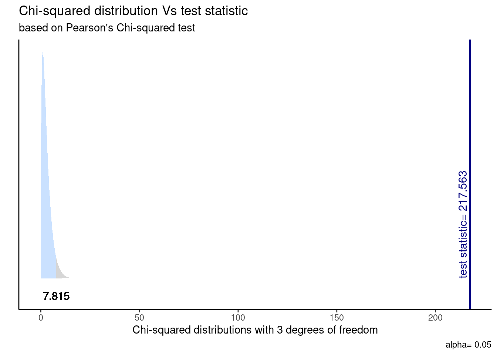

pacman::p_load(tidyverse, # Manipulacion datos
sjPlot, # Tablas
psych, # Correlaciones
DescTools, # Tablas
gginference, # Visualizacion
rempsyc, # Reporte
broom) # Varios
options(scipen = 999) # para desactivar notacion cientifica
rm(list = ls()) # para limpiar el entorno de trabajoAsociación con categóricas
Sesión del viernes, 17 de noviembre de 2023
Objetivo de la práctica
El objetivo de esta guía práctica es introducirnos en técnicas de asociación entre variables categóricas, aplicando lo apredendido hasta ahora sobre inferencia estadística.
En detalle, aprenderemos:
- Generar y analizar tablas de contingencia (o cruzadas)
- Estimar e interpretar la prueba de Chi-cuadrado
- Aplicar coeficientes de correlación entre variables categóricas
Recursos de la práctica
En esta práctica trabajaremos con un subconjunto de datos previamente procesados de la Encuesta de Caracterización Socioeconómica (CASEN) del año 2022, elaborada por el Ministerio de Desarrollo Social y Familia. Para este ejercicio, obtendremos directamente esta base desde internet. No obstante, también tienes la opción de acceder a la misma información a través del siguiente enlace: CASEN 20222. Desde allí, podrás descargar el archivo que contiene el subconjunto procesado de la base de datos CASEN 2022.
Preparación datos
Comencemos por preparar nuestros datos. Iniciamos cargando las librerías necesarias.
Cargamos los datos directamente desde internet.
load(url("https://github.com/cursos-metodos-facso/datos-ejemplos/raw/main/casen_proc.RData")) #Cargar base de datos
dim(proc_casen)[1] 3000 29Contamos con 29 variables (columnas) y 3000 observaciones (filas).
Tablas de contingencia
Una tabla de contingencia es una de las maneras más simples y útiles para representar el cruce entre dos variables categóricas.
Con ella, podemos obtener en las celdas las frecuencias conjuntas entre ambas variables, es decir, cuántos casos de una determinada categoría de la variable Y ocurren conjuntamente con una determinada categoría de la variable X.
Además, podemos presentar los totales de cada fila y columna al exterior de la tabla, también conocidas como frecuencias marginales.
Veamos un ejemplo con ss_salud y universitaria:
sjPlot::sjt.xtab(var.row = proc_casen$ss_salud, var.col = proc_casen$universitaria,
show.summary = F, emph.total = T)| s13. ¿A qué sistema previsional de salud pertenece? |
Educación superior alcanzada (si/no) |
Total | |
| No | Sí | ||
| 1. Sistema Público FONASA |
2027 | 524 | 2551 |
| 2. Isapre | 111 | 167 | 278 |
| 3. FF.AA. y del Orden |
37 | 22 | 59 |
| 4. Ninguno (particular) |
61 | 15 | 76 |
| Total | 2236 | 728 | 2964 |
Sumado a esto, tenemos:
Frecuencias absolutas: números que aparencen en la tabla (ya sean conjuntas o marginales)
Frecuencias porcentuales:
- porcentaje fila: % que cada frecuencia conjunta representa sobre la marginal de su fila
- porcentaje columna: % que cada frecuencia conjunta representa sobre la marginal de su columna
- porcentaje total: % que cada frecuencia conjunta representa sobre el número total de casos de la tabla
Veamos cómo incorporar el porcentaje fila y columna en la tabla.
sjPlot::sjt.xtab(var.row = proc_casen$ss_salud,
var.col = proc_casen$universitaria,
show.summary = F,
emph.total = T,
show.row.prc = T, # porcentaje fila
show.col.prc = T # porcentaje columna
)| s13. ¿A qué sistema previsional de salud pertenece? |
Educación superior alcanzada (si/no) |
Total | |
| No | Sí | ||
| 1. Sistema Público FONASA |
2027 79.5 % 90.7 % |
524 20.5 % 72 % |
2551 100 % 86.1 % |
| 2. Isapre | 111 39.9 % 5 % |
167 60.1 % 22.9 % |
278 100 % 9.4 % |
| 3. FF.AA. y del Orden |
37 62.7 % 1.7 % |
22 37.3 % 3 % |
59 100 % 2 % |
| 4. Ninguno (particular) |
61 80.3 % 2.7 % |
15 19.7 % 2.1 % |
76 100 % 2.6 % |
| Total | 2236 75.4 % 100 % |
728 24.6 % 100 % |
2964 100 % 100 % |
Aquí, los porcentajes fila aparecen en azul y los porcentajes columna en verde.
Prueba de hipótesis con Chi-cuadrado
La prueba de Chi-cudrado (\(\chi^2\)) es una herramienta estadística utilizada para evaluar si existe una asociación significativa entre dos variables categóricas.
Testeamos la hipótesis de independencia en una tabla de contigencia. Por ejemplo, si decimos que existe una relación entre tener educación superior y la preferencia por algún sistema de salud, esperamos encontrar que un porcentaje más alto de quienes tienen educación superior se inclinen por un sistema de salud determinado.
Se basa en la comparación de las frecuencias observadas en una tabla de contingencia con las frecuencias esperadas si las variables fueran independientes. Si existe una gran diferencia entre las esperadas y las observadas, podemos suponer que hay una relación entre variables.
Prueba de Chi-cuadrado
Contrastamos la hipótesis nula (o de trabajo) de que las variables son idenpendientes entre ellas: \[ H_{0}: \pi_{fc} = \pi_{f}\pi_{c} \]
En relación a una hipótesis alternativa sobre que las variables están relacionadas: \[ H_{A}: \pi_{fc} \neq \pi_{f}\pi_{c} \]
Veamos un ejemplo con nuestros datos. Evaluemos si el nivel educacional se relaciona con el tipo de sistema de salud al que pertenecen las personas en Chile durante el 2022.
Apliquemos nuestros cinco pasos para inferencia.
- Formulamos nuestras hipótesis:
\(H_{0}\): No hay asociación entre el nivel educacional y la preferencia por un sistema de salud.
\(H_{A}\): El nivel educacional se asocia con la preferencia por un sistema de salud.
- Generar tabla de contingencia con frecuencias observadas y esperadas:
conti_table <- table(proc_casen$ss_salud, proc_casen$universitaria)
conti_table
0 1
1 2027 524
2 111 167
3 37 22
4 61 15Además, podemos añadir las frecuencias marginales.
row_sum <- margin.table(conti_table, 1)
col_sum <- margin.table(conti_table, 2)
conti_added <- cbind(conti_table, as.vector(row_sum))
conti_added <- rbind(conti_added, c(as.vector(col_sum), sum(conti_table)))
conti_added 0 1
1 2027 524 2551
2 111 167 278
3 37 22 59
4 61 15 76
2236 728 2964Ahora, generamos una tabla de contingencia con frecuencias esperadas.
Las frecuencias observadas corresponden a:
\[ f_{e_c} = \frac{{\text{(Total marginal de fila para la celda)} \times \text{(Total marginal de columna para la celda)}}}{{N}} \]
Usando nuestros datos la frecuencia esperada para la primera celda sería:
\[ f_{e_c} = \frac{(2551)*(2236)}{{2964}} = 1924.4\]
Esto debemos repetirlo para cada celda… pero podemos hacerlo más rápido con DescTools.
exp_table <- DescTools::ExpFreq(conti_added, freq = "abs")
round(exp_table, 1) 0 1
1 1924.4 626.6 2551
2 209.7 68.3 278
3 44.5 14.5 59
4 57.3 18.7 76
2236.0 728.0 2964- Calcular el valor estimado de la prueba:
Establecemos la diferencia entre lo observado y lo esperado, siendo:
\[\chi^2=\sum\frac{(f_o-f_e)^2}{f_e}\]
chi_stat <- sum(
(2027-1924.4)^2/1924.4,
(524-626.6)^2/626.6,
(111-209.7)^2/209.7,
(167-68.3)^2/68.3,
(37-44.5)^2/44.5,
(22-14.5)^2/14.5,
(61-57.3)^2/57.3,
(15-18.7)^2/18.7
)
chi_stat[1] 217.4706- Especifica el valor crítico de la prueba:
df <- (4-1)*(2-1) #definimos grados de libertad
chi_critico <- qchisq(p = 0.05, df, lower.tail = F)
chi_critico[1] 7.814728- Contrasta el valor estimado con el crítico e interpreta los resultados:
chi_stat > chi_critico[1] TRUEEn el análisis utilizando la prueba de \(\chi^2\) de Pearson para la asociación entre el tipo de sistema de salud y el nivel educativo, se encontró una relación significativa (χ2 = 217.56 , df = 3, p< .001). Por tanto, rechazamos la \(H_{0}\) sobre no asociación con un 95% de confianza, existiendo evidencia a favor de nuestra \(H_{A}\) ya que hay evidencia de una relación entre el sistema de salud y el nivel educativo.
- Y el cálculo directo en R:
chi_results <- chisq.test(table(proc_casen$ss_salud, proc_casen$universitaria))
#stats.table <- tidy(chi_results, conf_int = T)
#nice_table(stats.table)Visualicemos la distribución de esta prueba y su zona de rechazo.
ggchisqtest(chi_results)Warning in geom_text(aes(x = ub, y = -0.02), label = round(ub, 3), vjust = 0.3): All aesthetics have length 1, but the data has 10000 rows.
ℹ Please consider using `annotate()` or provide this layer with data containing
a single row.
Correlación entre categóricas
Al igual que otros coeficientes de correlación, las correlaciones entre categóricas:
- Oscila entre -1 y 1.
- Indica la dirección y fuerza de asociación entre variables.
- Su tamaño de efecto se puede interpretar a partir de ciertos estándares.
- Se interpreta de la misma forma que otros coeficientes de correlación.
a) Punto biserial
La correlación punto biserial se utiliza para calcular la correlación entre una variable categórica dicotómica y una variable continua.
Veamos la frecuencia de sexo y la media de y1.
sjmisc::frq(proc_casen$sexo)
## Sexo (x) <numeric>
## # total N=3000 valid N=3000 mean=1.53 sd=0.50
##
## Value | Label | N | Raw % | Valid % | Cum. %
## ---------------------------------------------------
## 1 | 1. Hombre | 1404 | 46.80 | 46.80 | 46.80
## 2 | 2. Mujer | 1596 | 53.20 | 53.20 | 100.00
## <NA> | <NA> | 0 | 0.00 | <NA> | <NA>
mean(proc_casen$y1, na.rm = T)
## [1] 619435.3Obtengamos la correlación punto biserial entre sexo e ingresos.
cor.test(proc_casen$sexo, proc_casen$y1)
Pearson's product-moment correlation
data: proc_casen$sexo and proc_casen$y1
t = -4.0718, df = 912, p-value = 5.069e-05
alternative hypothesis: true correlation is not equal to 0
95 percent confidence interval:
-0.19676351 -0.06937883
sample estimates:
cor
-0.1336231 b) Tetracórica
La correlación tetracórica se utiliza para calcular la correlación entre dos variables binarias categóricas, es decir, variables nominales dicómoticas (solo dos posibles valores).
Veamos las frecuencias de sexo y disc_fisica.
sjmisc::frq(proc_casen$sexo)
## Sexo (x) <numeric>
## # total N=3000 valid N=3000 mean=1.53 sd=0.50
##
## Value | Label | N | Raw % | Valid % | Cum. %
## ---------------------------------------------------
## 1 | 1. Hombre | 1404 | 46.80 | 46.80 | 46.80
## 2 | 2. Mujer | 1596 | 53.20 | 53.20 | 100.00
## <NA> | <NA> | 0 | 0.00 | <NA> | <NA>
sjmisc::frq(proc_casen$disc_fisica)
## Discriminado por su apariencia física (x) <numeric>
## # total N=3000 valid N=3000 mean=1.03 sd=0.17
##
## Value | N | Raw % | Valid % | Cum. %
## ---------------------------------------
## 1 | 2916 | 97.20 | 97.20 | 97.20
## 2 | 84 | 2.80 | 2.80 | 100.00
## <NA> | 0 | 0.00 | <NA> | <NA>Obtengamos la correlación tetrácorica entre sexo y discriminación por apariencia física.
matriz <- proc_casen %>% select(sexo, disc_fisica) # creamos matriz con var de interes
psych::tetrachoric(matriz, na.rm = T)Call: psych::tetrachoric(x = matriz, na.rm = T)
tetrachoric correlation
sexo dsc_f
sexo 1.00
disc_fisica -0.05 1.00
with tau of
sexo disc_fisica
-0.08 1.91 c) Policórica
La correlación policórica se utiliza para calcular la correlación entre dos variables ordinales categóricas, es decir, variables ordinales cuyos posibles valores siguen un orden (por ejemplo, variables tipo Likert).
Veamos las frecuencias de ayuda_moverse y ayuda_thogar.
sjmisc::frq(proc_casen$ayuda_moverse)
## s33c. Últ. 30 días, ayuda de otra persona para: Moverse dentro de la casa (x) <numeric>
## # total N=3000 valid N=68 mean=3.21 sd=1.49
##
## Value | Label | N | Raw % | Valid % | Cum. %
## ----------------------------------------------------------
## -99 | No responde | 0 | 0.00 | 0.00 | 0.00
## -88 | No sabe | 0 | 0.00 | 0.00 | 0.00
## 1 | 1. Nunca | 13 | 0.43 | 19.12 | 19.12
## 2 | 2. Casi nunca | 9 | 0.30 | 13.24 | 32.35
## 3 | 3. Algunas veces | 18 | 0.60 | 26.47 | 58.82
## 4 | 4. Muchas veces | 7 | 0.23 | 10.29 | 69.12
## 5 | 5. Siempre | 21 | 0.70 | 30.88 | 100.00
## <NA> | <NA> | 2932 | 97.73 | <NA> | <NA>
sjmisc::frq(proc_casen$ayuda_thogar)
## s33h. Últ. 30 días, ayuda de otra persona para: Realizar sus tareas del hogar (x) <numeric>
## # total N=3000 valid N=80 mean=3.80 sd=1.39
##
## Value | Label | N | Raw % | Valid % | Cum. %
## ----------------------------------------------------------
## -99 | No responde | 0 | 0.00 | 0.00 | 0.00
## -88 | No sabe | 0 | 0.00 | 0.00 | 0.00
## 1 | 1. Nunca | 10 | 0.33 | 12.50 | 12.50
## 2 | 2. Casi nunca | 3 | 0.10 | 3.75 | 16.25
## 3 | 3. Algunas veces | 17 | 0.57 | 21.25 | 37.50
## 4 | 4. Muchas veces | 13 | 0.43 | 16.25 | 53.75
## 5 | 5. Siempre | 37 | 1.23 | 46.25 | 100.00
## <NA> | <NA> | 2920 | 97.33 | <NA> | <NA>Obtengamos la correlación policórica entre si la persona necesitó ayuda para moverse dentro de la casa y si necesitó ayuda para realizar tareas dentro del hogar, en los últimos 30 días.
matriz <- proc_casen %>% select(ayuda_moverse, ayuda_thogar) # creamos matriz con var de interes
psych::polychoric(matriz, na.rm = T)Call: psych::polychoric(x = matriz, na.rm = T)
Polychoric correlations
ayd_m ayd_t
ayuda_moverse 1.00
ayuda_thogar 0.82 1.00
with tau of
1 2 3 4
ayuda_moverse -0.87 -0.46 0.22 0.499
ayuda_thogar -1.15 -0.98 -0.32 0.094Resumen
Hoy profundizamos en medidas de asociación entre variables categóricas.
En detalle, aprendimos a:
- Generar y analizar tablas de contingencia (o cruzadas)
- Estimar e interpretar la prueba de Chi-cuadrado
- Aplicar coeficientes de correlación entre variables categóricas
Reporte de progreso
Completar el reporte de progreso correspondiente a esta práctica aquí. El plazo para contestarlo es hasta el día viernes de la semana en la que se publica la práctica correspondiente.